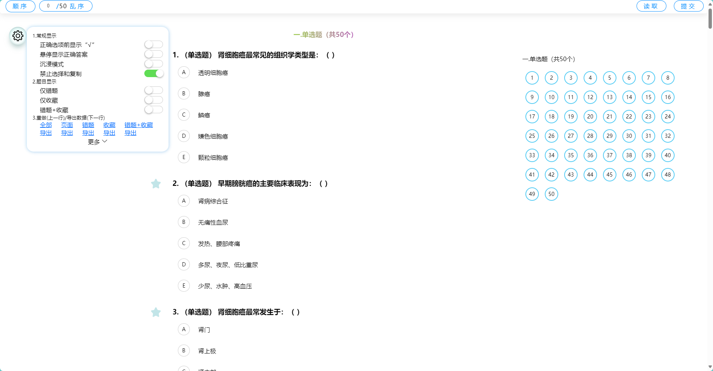

本网站是一个专为南华衡医22级临床专业同学设计的学习平台，旨在帮助临床专业学生更好地学习和复习课程内容。我们的网站提供了丰富的学习资源，包括学习通和智慧树的题目，涵盖了各个临床专业领域的知识点。无论你是准备考试还是想要巩固所学知识，本网站都能为你提供全方位的支持。
视频教程（加载较慢）
① 打开网址。
在浏览器输入最新的网址（截至2024-11-13 01:25:20，该网址为https://usc.red），回车等待加载完毕，如果加载失败，检查您的网络，不然就是我们网站的问题。 建议使用较高版本的谷歌浏览器或者edge浏览器，如果您执意使用低版本浏览器和各种奇怪的浏览器，可能无法正常使用本网站的部分功能。
② 选择课程和选择作业。
题目来源主要为学习通和智慧树的部分作业
③ 答题
④ 提交与查看答案
点击右上角的提交按钮。
⑤ 导航栏和功能球介绍。
您可以方便的反复做题，包括顺序和乱序。 还可以查看错题与收藏的题目，甚至在新页面重新做题。

请您直接到221寝室，进行面对面沟♂通♀。 您也可以通过以下邮箱与我们联系：chatgpt.usc@gmail.com 。